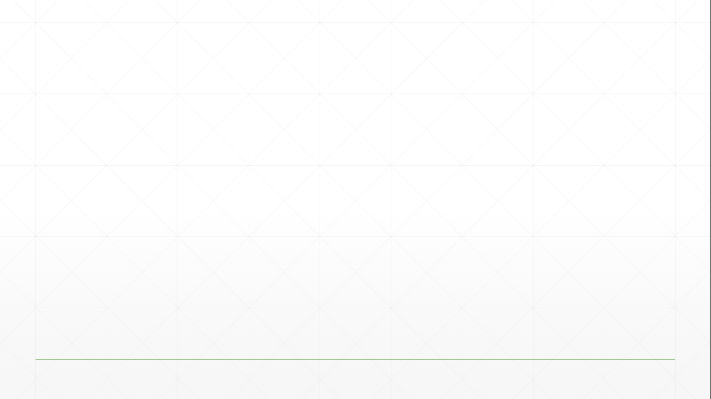

Um estudo do relacionamento entre técnicas de usabilidade e testes automatizados em métodos empíricos de desenvolvimento de software
Autores: Jônatas Medeiros de Mendonça
Rodrigo Medeiros Soares da Silva
Orientador: Prof. Dr. Paulo Roberto Miranda Meirelles
Curso: Engenharia de Software
Universidade de Brasília - Campus UnB Gama
